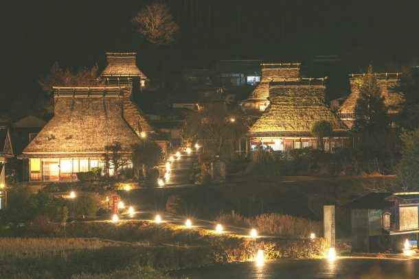
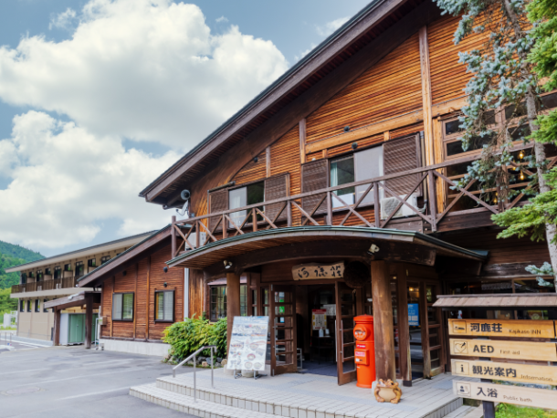
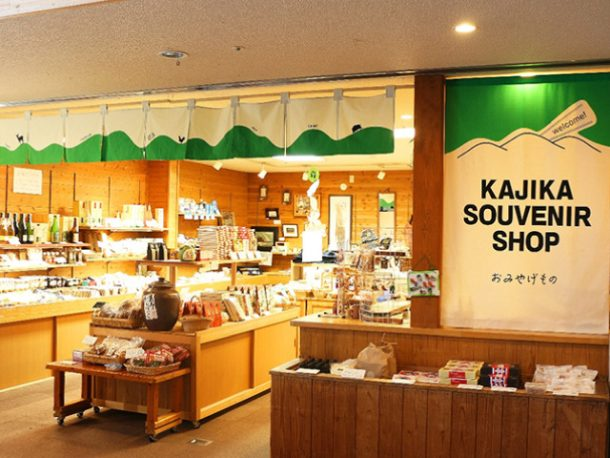
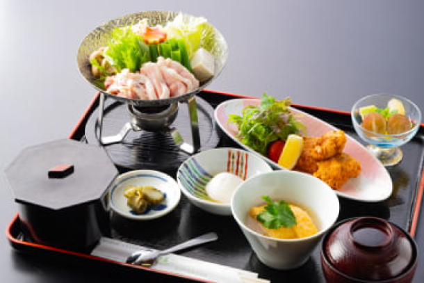
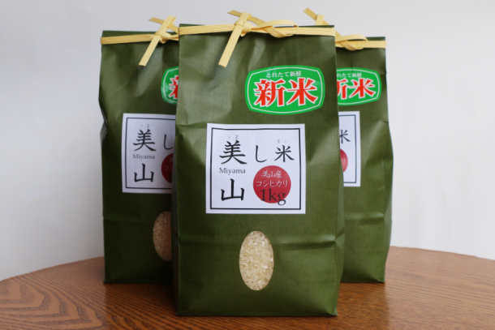

最新の情報は 公式サイトのツアーページ をご覧ください。
冬の美山、灯りに包まれる夜。～かやぶきの里「冬灯廊」2027～
| 平日 | 13,000円／人(税込) |
| 休日 | 13,500円／人(税込) |
※大人・子ども同額
冬の美山へ、心あたたまる特別な旅に出かけませんか？
京都・美山の冬を彩る「かやぶきの里 冬灯廊」。
昔ながらのかやぶき屋根の集落が、やさしい灯りに包まれる幻想的な冬の風景をお楽しみいただきます。
まずは、河鹿荘にて美山の味覚を盛り込んだ「美山御膳」の早めのご夕食。
今回はお肉を国産牛にグレードアップしてご用意いたしました。
美山ならではの味わいを、ゆっくりとご堪能ください。
夕暮れ時には、かやぶきの里へ。静かな山里に灯るあたたかな光が、冬ならではの美しい景色を演出します。
昼間とはひと味違う、幻想的な美山の冬景色をお楽しみください。
さらに、お帰りには美山産コシヒカリ1kgをプレゼント！
冬の味覚と美しい灯りに出会う、心に残るひとときをお過ごしください。
| 🌟おすすめポイント |
| 🏠かやぶき屋根の集落を彩るあたたかな灯り 冬の美山でしか出会えない、情緒あふれる夜の風景をお楽しみください |
| 🥩美山の味覚を楽しめる美山御膳のご夕食をご準備 お肉は国産牛にグレードアップ！ |
| 🌾うれしいお土産付き！美山産コシヒカリ1kg 旅の思い出とともに、ご自宅でも美山の味をお楽しみください |
| 🚙タクシーツアーだから、移動もラクラク・寒い夜でも安心 美山を気軽に満喫できます！ |
| 👤一人参加OK！ しずかに自分を癒したい方にもぴったり |
行程
| 15:00 | 京都駅八条口MKタクシーのりば （集合・出発） |
| 16:30 | 美山町自然文化村 河鹿荘 |
| 17:30 | 美山かやぶきの里 <冬灯廊鑑賞 約90分> 【公式HP】美山かやぶきの里 冬灯廊 |
| 18:40 | 美山ふれあい広場 （休憩） |
| 20:20頃 | 京都駅八条口（解散） |
※交通渋滞等の影響で滞在時間が短くなる場合があります。
※防寒のご準備をお願いします。
※かやぶきの里ライトアップ：期間中毎日17時～19時
※かやぶき民家のライトアップ：：期間中毎日17時～19時
※あったか屋台の出店（8店舗程度）：期間中毎日15時～19時
※LED提灯の販売：期間中毎日15時～19時
※餅つき体験＆ぜんざいのふるまいなど：期間中毎日（時間は日程により異なります。）
※日本舞踊の奉納：2月3日（水）限定 17時45分～18時5分

写真提供：一般社団法人南丹市美山観光まちづくり協会
美山自然文化村 河鹿荘
地元美山の産品にこだわったお土産のお買い物をお楽しみください。
【写真下段右】お土産として美山産コシヒカリ1kgを参加者全員にプレゼント♪
※写真はすべてイメージです




| 美山御膳 | |
| ・国産牛一人鍋 ・鶏唐揚げ ・サラダ ・地卵の出汁巻きみぞれ餡掛け | ・地卵の温泉玉子 ・ご飯 ・汁物 ・香の物 ・デザート |
【MKトラベルLINE公式アカウント】
MKトラベルの新規ツアー情報をLINEでお届けいたします

【各SNSでも京都の情報やツアー情報をお届けしています】


旅行条件
| ツアー番号 | T012HH |
| 出発地 | 京都市 |
| 添乗員／ガイド | なし（乗務員がその業務を代行いたします）／なし |
| 食事 | 夕食1回 |
| 最少催行人数 | 6名 |
お申込みについてのご注意
※最少催行人数は6名様です。最少催行人員に満たない場合は、旅行の実施を取りやめることがあります。出発の7日前にその旨をご連絡し、お客様から当社がお預かりしている旅行費用の全額をお返しいたします。
※旅行条件・旅行代金は、2026年11月1日現在を基準としています。
※行程および帰着時間は交通事情などにより変更になる場合があります。
※お申込みの前に弊社の募集型企画旅行規約をご確認ください。
よくある質問
Q.1名ですが、申し込みできますか？
A.はい。お一人参加の方もたくさんいらっしゃいますので、お気軽にお申し込みください。
Q.参加したかったけど、日程が合いません
A.貸切で再現できる場合もございますのでご相談ください。お問合せフォームはこちら
Q.かやぶきの里・かやぶき民家のライトアップは何時からですか？
A.期間中毎日17時～19時です。
Q.LED提灯はいつでも買えますか？
A.期間中毎日15時～19時に販売されます。
Q.日本舞踊の奉納が見たいのですが、いつ参加すればよいですか？
A.日本舞踊の奉納は2月3日（水）のみ行われますので、その日にご参加ください。（17時45分～18時5分予定）
Q.あったか屋台や餅つき体験・ぜんざいのふるまいはいつ行われますか？
A.あったか屋台、餅つき体験・ぜんざいのふるまいは期間中毎日行われます。あったか屋台は15時～19時ごろ、餅つき体験・ぜんざいのふるまいは日程により開催時間が異なりますのでご注意ください。
＜MKトラベルTOPはこちら▶＞
＜おすすめツアーはこちら▶＞
【WEBシステムよりご予約の場合】
・TACPOカード
・クレジットカード決済
・コンビニ決済
お支払方法詳細はこちら
お客様のご都合でご予約をキャンセルされる場合は、すみやかに下記お問合せ先までご連絡ください。
キャンセル料
11日目に当たる日以前
無料
10日目に当たる日以前
20%
7日目に当たる日以前
30%
旅行開始日の前日
40%
旅行開始日の当日
50%
旅行開始後又は無連絡
100%